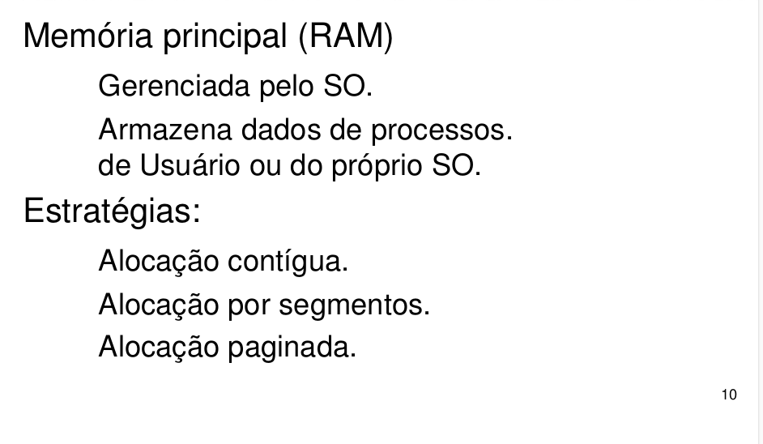
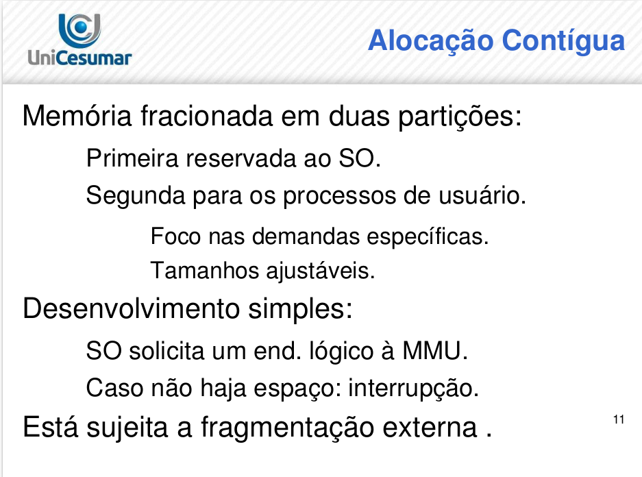
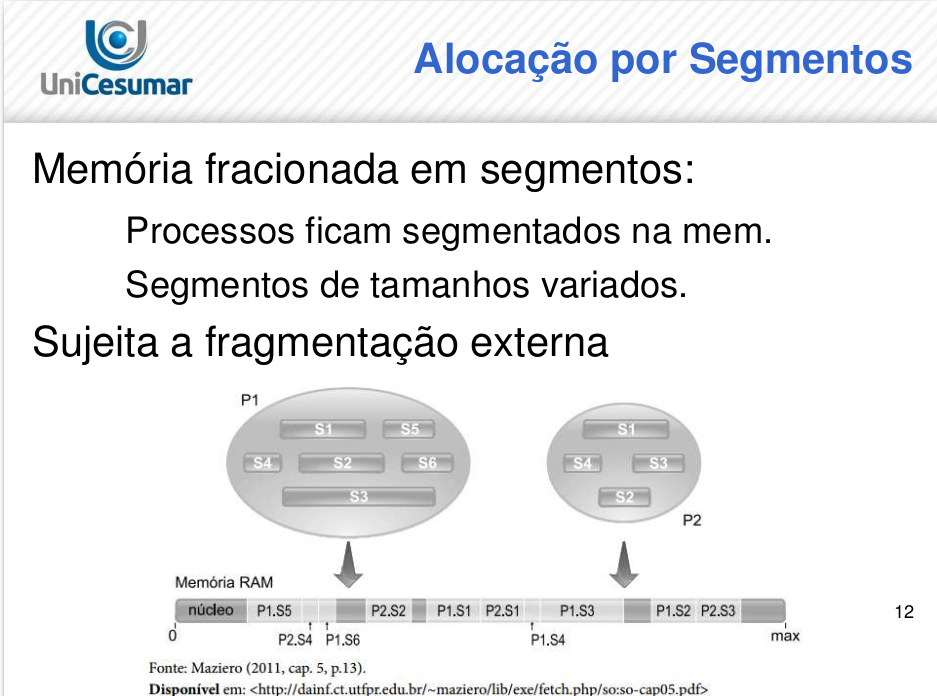
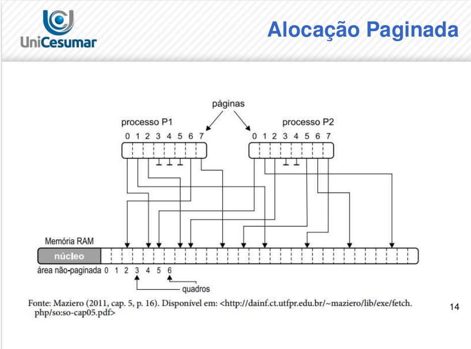

Objetivos de Aprendizagem
- Apresentar definições de memória e as técnicas que o sistema operacional utiliza para garantir o armazenamento dos dados utilizados pelos processos.
- Diferenciar endereços lógicos dos endereços físicos, quem os cria e como são utilizados pela memória.
- Explicar como as informações são armazenadas/alocadas na memória e como elas podem se fragmentar.
- Identificar quais estratégias de alocação são utilizadas pelos principais sistemas operacionais.
- Apresentar o uso da técnica de memória virtual.
- Apresentar conceitos de arquivos.
- Apresentar e diferenciar os sistemas de arquivos utilizados pelos principais sistemas operacionais.
INTRODUÇÃO
Estratégias de alocação
A memória principal (RAM) utiliza estratégias para armazenar tanto os dados do sistema operacional como os diversos processos na memória. Neste tópico iremos aprender três das principais estratégias: alocação contígua, alocação por segmentos e alocação paginada.

Alocação contígua
Nesta estratégia, a memória é dividida em duas partições, sendo uma para o sistema operacional e a outra partição de tamanhos ajustáveis que irão se adequar à demanda específica de cada processo do usuário. A MMU recebe o endereço lógico e tenta salvar em uma partição. Caso o espaço solicitado seja compatível, a informação é salva, senão é retornada uma interrupção para o processador, indicando um endereço inválido.
A vantagem desta alocação é que ela é simples para ser desenvolvida, mas está sujeita a fragmentação externa.

Alocação por segmentos
Esta estratégia fraciona o espaço de memória em áreas chamadas de segmentos. Estes podem ser alocados separadamente na memória física, diferente da alocação contígua que toda a memória utilizada em um processo estava em uma determinada partição. Cada partição da memória torna-se uma coleção de segmentos de tamanhos variados e com políticas de acessos distintas. Esta estratégia também está sujeita a fragmentação externa.
Como demostrado no slide abaixo:
Alocação paginada
Visando evitar a fragmentação externa e a necessidade de compactação, foi desenvolvida a estratégia de alocação denominada paginada. Ela permite que o endereçamento físico de um processo não seja contíguo. Esta estratégia é usada pela maioria dos sistemas operacionais atuais.
Nesta estratégia, o espaço de endereço lógico é dividido em blocos chamados de páginas, onde para o processo, esta divisão é transparente. Além do endereço lógico, o espaço de endereço físico também é dividido em blocos chamados de quadros. Cada página (espaço lógico) será alocada em um determinado quadro (espaço físico), independente da posição disponível na memória RAM. Esta associação é chamada de tabela de páginas.

